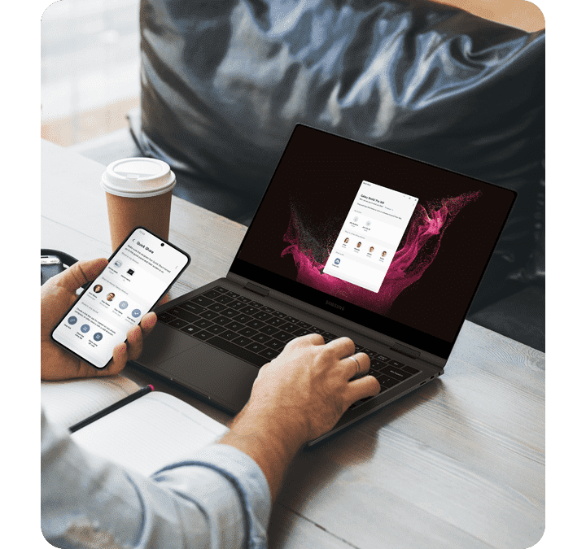
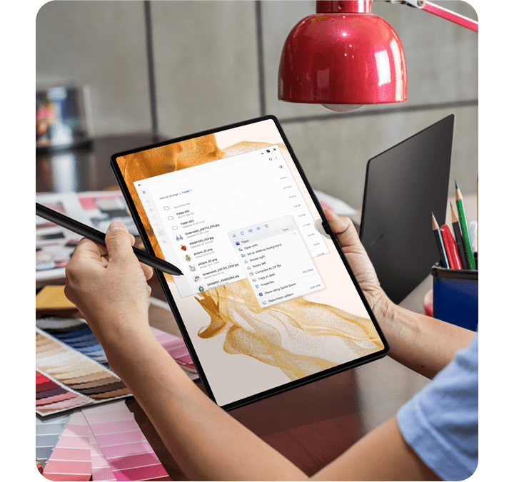
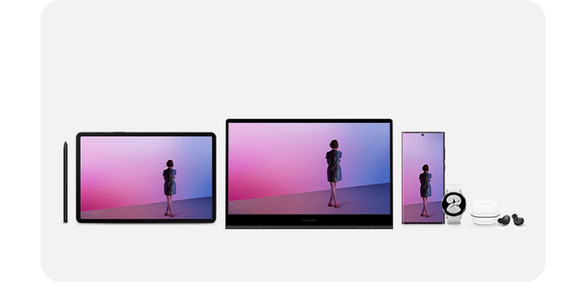

Плавная и быстрая многозадачность
Боретесь с потоком графических материалов и слишком большим количеством текстов? Вот несколько советов, как отправить одновременно несколько изображений и просмотреть фразы из Galaxy Book прямо на вашем смартфоне.
Повысьте свою производительность
1. Простое и душевное общение
Хотите знать, как поделиться множеством файлов и изображений
для вашего проекта со смартфона на ноутбук?
Просто откройте Quick Share для беспроводного обмена данными между устройствами Samsung Galaxy.
2. Перенесите свои мобильные приложения на ПК
Работаете над своим проектом на ПК?
Не нужно переключаться туда и обратно между вашим компьютером и смартфоном! Связь с Windows переносит
мобильные приложения прямо на ваш компьютер.
Зацените это!
|
Делитесь файлами одним кликом, Quick Share Простой способ беспроводного обмена файлами с телефона на телефон, и даже на планшет / ПК! |
|
|
* Доступно на устройстве Galaxy с установленной версией One UI 2.1 или более поздних версий,
а Quick Share использует Bluetooth с низким энергопотреблением и Wi-Fi. * Общий доступ к фотографиям, видео и файлам в Quick Share доступен только на устройствах Samsung Galaxy. |
|
Ваш телефон находится на вашем компьютере, Связь с Windows Вы можете работать в многозадачном режиме с приложениями для телефона на ПК! Наслаждайтесь плавным взаимодействием между устройствами! |
|
|
*Некоторые мобильные приложения могут ограничивать доступ к контенту на других экранах.
Некоторые связанные функции могут отличаться в зависимости от версии приложения, ОС Android
и устройства. *Пользователи должны подключить свое устройство Samsung Galaxy к Windows ПК с помощью функции "Связь с Windows" на телефоне и приложения "Microsoft Связь с телефоном" на ПК и следовать инструкциям по настройке, включая вход в ту же учетную запись Microsoft. *Связь с Windows предварительно загружена на некоторые устройства Samsung Galaxy. Для ПК (приложение Microsoft Связь с телефоном) требуется Windows 10 или выше. "Microsoft Связь с телефоном" рекомендует, чтобы устройство Samsung Galaxy было подключено к той же сети Wi-Fi, что и ПК. |
Galaxy Book
Galaxy Z Fold4 Узнать больше >
Совместное вдохновение в Samsung Galaxy
Дайте волю своим ярким идеям на большом экране в любое время и в любом месте. Создайте свой шедевр более тонким и детальным способом с экосистемой Samsung Galaxy!
Позвольте своей креативности сиять
1. Увеличьте экран вдвое для большей производительности
Нет необходимости переходить от рабочего окна и референсу на ПК. Используйте планшет в качестве второго экрана, перемещая референс.
2. То, что на вашем телефоне, теперь и на вашем компьютере
Пришла в голову потрясающая идея на ходу? Делайте заметки в Samsung Notes на своем планшете, пока не забыли! Продолжайте развивать свои идеи в Galaxy Book, когда вернетесь домой.
Зацените!
|
Galaxy Tab как двойной монитор! Ваш второй экран Работайте на обоих устройствах с помощью Samsung Multi Control. Просто добавьте второй экран или продублируйте экран для удобства подключения. |
|
| * Второй экран доступен только на некоторых моделях планшетов Galaxy, включая Galaxy Tab S7, S7+, S7 FE, S8, S8+ и S8 Ultra, и доступен на устройствах Samsung Galaxy с установленной версией One UI 3.1 или более поздних версий. |
|
Записывайте идеи прямо на месте! Samsung Notes Все заметки синхронизируются на ваших устройствах. Наслаждайтесь улучшенной системой организации папок, а также синхронизированными аудио закладками. |
|
| * Требуется подключение к сети или Wi-Fi. Все устройства должны быть подключены к одной учетной записи Samsung. |
Galaxy Tab S8 Series Узнать больше >
- Наслаждайтесь связанной мощью Samsung Galaxy!
Потрясающе в одиночку, но вместе еще лучше. Будьте продуктивны и сохраняйте мотивацию. Повысьте свою производительность с помощью экосистемы Samsung Galaxy!
 *Показанные Galaxy Tab S8, Galaxy S22 Ultra, Galaxy Watch 4 и Galaxy Buds 2 продаются отдельно.